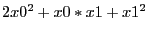

Next: GRBgetqconstr Up: Model Queries Previous: GRBgetpwlobj
| int | GRBgetq ( | GRBmodel | *model, |
| int | *numqnzP, | ||
| int | *qrow, | ||
| int | *qcol, | ||
| double | *qval ) |
Retrieve all quadratic objective terms. The qrow,
qcol, and qval arguments must be large enough
to hold the result. You can query the
NumQNZs
attribute to determine how many terms will be returned.
Return value:
A non-zero return value indicates that a problem occurred while retrieving the quadratic objective terms. Refer to the Error Code table for a list of possible return values. Details on the error can be obtained by calling GRBgeterrormsg.
Arguments:
model: The model from which the quadratic objective terms should be retrieved.
numqnzP: The number of quadratic objective terms retrieved.
qrow: Row indices associated with quadratic terms. A quadratic term is represented using three values: a pair of indices (stored in qrow and qcol), and a coefficient (stored in qval). The array arguments give the corresponding values for each quadratic term. To give an example, if the quadratic terms in the model are , this routine would return qrow[] = {0, 0, 1}, qcol[] = {0, 1, 1}, and qval[] = {2, 1, 1}.
qcol: Column indices associated with quadratic terms. See the description of the qrow argument for more information.
qval: Numerical values associated with quadratic terms. See the description of the qrow argument for more information.
Example usage:
int qnz; int *qrow, *qcol; double *qval; error = GRBgetdblattr(model, GRB_DBL_ATTR_NUMQNZS, &qnz); /* ...allocate qrow, qcol, qval to hold 'qnz' values... */ error = GRBgetq(model, &qnz, qrow, qcol, qval);